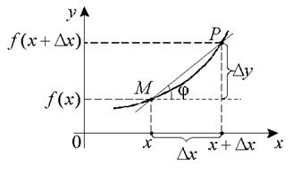

14.1.2. Геометрический смысл производной. Уравнения касательной и нормали к
графику функции

Рассмотрим две точки графика функции  :
:
:и
.
– секущая.
При стремлении  к нулю (т.е. при
стремлении точки
к нулю (т.е. при
стремлении точки  к точке
к точке  ) эта секущая будет поворачиваться
относительно точки .
) эта секущая будет поворачиваться
относительно точки .
к нулю (т.е. при
стремлении точки к точке ) эта секущая будет поворачиваться
относительно точки .Касательной к графику функции  в точке называется
предельное положение секущей при
в точке называется
предельное положение секущей при  ().
().
в точке называется
предельное положение секущей при ().Нормалью к графику функции в
точке называется перпендикуляр к
касательной, проведенный через точку касания.
в
точке называется перпендикуляр к
касательной, проведенный через точку касания.Если функция имеет в точке  производную
производную  ,
то график функции в точке имеет касательную
с угловым коэффициентом .
,
то график функции в точке имеет касательную
с угловым коэффициентом .
имеет в точке производную ,
то график функции в точке имеет касательную
с угловым коэффициентом .Доказательство:
Пусть и . Так как существует
. Так как существует,
то:
1) существует предельное положение секущей, то есть
касательная;
2) угловой коэффициент касательной равен .
1˚.Значение позволяет
записать уравнение касательной к графику функции в
точке  :
:
в
точке :.
2˚.Поскольку условие перпендикулярности двух прямых: , то уравнение нормали
к графику функции в точке имеет вид:
в точке имеет вид:.
3˚. При в точке функция является возрастающей,
а при – убывающей.
функция является возрастающей,
а при – убывающей.